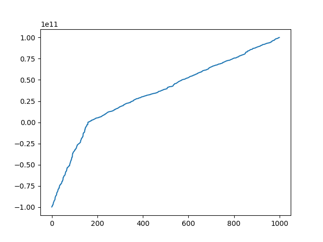
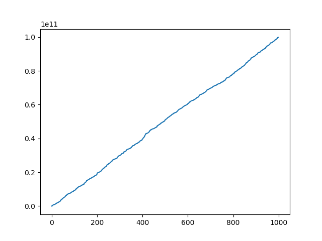

半数值算法:与数字有关的算法
def 平方取中(num): #十进制 平方取中随机算法 tmp=str(num**2) tmp1=len(str(num)) #输入数值的位数 index=round(tmp1/2) #计算前后索引 #print(num,index,tmp) #print(int(tmp[tmp1-index:-index+1],10)) return int(tmp[tmp1-index:-index+1],10) 平方取中(12345) #39902 平方取中(1234) #2275
- 推广:
- 线性同余序列总是存在循环周期
function liner_mod(X_n) m=1000 a=127632 c=7 X_nplus1=(a*X_n+c)%m @show X_nplus1 return X_nplus1 end liner_mod(1234) liner_mod(12345)
function seed(X_0=4678_9298_0981) m=1000_0000_0000 a=8276_3234_4621 c=7 X_1=(a*X_0+c)%m return X_1,m,a,c end function linear_rand(num) X_n,m,a,c=seed() num_list=Array{Int64,1}() for i=1:num X_nplus1=abs((a*X_n+c)%m) @show X_nplus1 push!(num_list,X_nplus1) X_n=X_nplus1 end return num_list end linear_rand(100)
using Random Random.seed!(123123123) function 间隔检验() rand_list=rand(Int,20) pipe=Channel{Int}(1000) task=@async begin while true put!(pipe,rand(Int)) end end bind(pipe,task) @show rand_list i=0 for num in rand_list ct::BigInt = 0 for iter_num in pipe if iter_num == num i+=1 if i>=10 @goto endplace end @info "$num 的间隔为 $ct" break else ct += 1 end if ct > 10000_0000 @info "$num 的间隔大于1亿" break end end end @label endplace @info "程序运行结束" end 间隔检验() #两层for循环反过来较好:每个随机数都检验10次
1010110111,1010101010,0000000.这三个数的随机性.测不准原理?
function ge_count() #区间检查 @info "使用管道传递随机数" pipe=Channel{Int}(1000) task=@async begin while true put!(pipe,rand(0:10000)) end end bind(pipe,task) @info "统计开始" bai_12=Set{Int}() count::BigInt=0 for num in pipe count+=1 if 5000<= num <6000 push!(bai_12,num) if length(bai_12) >= 1000 break end #@info "100-200范围内收集到:$(length(bai_12))" end end @info "fill 1/10 set used times:$count" #600-700:用了10884 #900-1000:用了3582 #其他区间在5000左右:50倍 end ge_count()
//只用到加法器+移位 加法:A+B+进位=result+进位 减法:B=-B 乘法=左移位+加法 除法=右移位+加法
function jiecheng(num) one=1 if num==1 return 1 end for i=2:num one*=i end return one end function check_one() #计算前导数字为1的频率 count=0 over=1000 tmp::BigInt=0 pipe = Channel{Int}(100) get_num=@async begin for i=1:over tmp=2^i #jiecheng(i) push!(pipe,tmp) end end bind(pipe,get_num) for num in pipe if repr(num)[1]=='1' count+=1 @info count, num end end @info "$(over) 个数字中存在$(count)个值前导数字为1" end check_one() [ Info: (1, 16) [ Info: (2, 128) [ Info: (3, 1024) [ Info: (4, 16384) [ Info: (5, 131072) [ Info: (6, 1048576) [ Info: (7, 16777216) [ Info: (8, 134217728) [ Info: (9, 1073741824) [ Info: (10, 17179869184) [ Info: (11, 137438953472) [ Info: (12, 1099511627776) [ Info: (13, 17592186044416) [ Info: (14, 140737488355328) [ Info: (15, 1125899906842624) [ Info: (16, 18014398509481984) [ Info: (17, 144115188075855872) [ Info: (18, 1152921504606846976) [ Info: 1000 个数字中存在18个值前导数字为1 #100,1000,10000都是18个 [ Info: (1, 1) [ Info: (2, 120) [ Info: (3, 1307674368000) [ Info: (4, 121645100408832000) [ Info: (5, 1096907932701818880) [ Info: (6, 1150331055211806720) [ Info: (7, 162129586585337856) [ Info: (8, 1585267068834414592) [ Info: 100 个数字中存在8个值前导数字为1 #阶乘的100,500,1000,5000结果与上面相同
#======================== 数字的String表示和Int表示间的转换函数 julia实现 ======================# function str2int(num_str::String,base=10) number=0 map_table=Dict('0'=>0,'1'=>1,'2'=>2,'3'=>3,'4'=>4,'5'=>5, '6'=>6,'7'=>7,'8'=>8,'9'=>9, 'a'=>10,'b'=>11,'c'=>12,'d'=>13,'e'=>14,'f'=>15) str_len=length(num_str) for (i,num) in enumerate(num_str) #@info i,str_len-i,num,map_table[num] number+=map_table[num]*(base^(str_len-i)) end #@info number return number #结果为一个十进制数字 end function 进制转换(num::String,base_from::Int,base_to::Int) #1:10进制作为中间环节 if 16<base_from || 36<base_to || base_from<2 ||base_to<2 @error "无法转换该进制" return nothing end result_str="" map_table=Dict(0=>'0',1=>'1',2=>'2',3=>'3',4=>'4',5=>'5', 6=>'6',7=>'7',8=>'8',9=>'9',10=>'a',11=>'b',12=>'c', 13=>'d',14=>'e',15=>'f',16=>'g',17=>'h',18=>'i',19=>'j', 20=>'k',21=>'l',22=>'m',23=>'n',24=>'o',25=>'p',26=>'q', 27=>'r',28=>'s',29=>'t',30=>'u',31=>'v',32=>'w',33=>'x', 34=>'y',35=>'z') function change10toN(num0::Int,base_to) #290页方法1a while num0 != 0 result_str=result_str*map_table[num0%base_to] num0=floor(num0/base_to) end return result_str end num10::Int=str2int(num,base_from) if base_to== 10 return num10 else result_str=change10toN(num10,base_to) #@info result_str return result_str end #2:直接转换??? end 进制转换("1234675678",10,1)
#page 351 算法C function div_N(N) #N 为奇数 x=2*floor(sqrt(N))+1 y=1 r=(floor(sqrt(N)))^2-N while r!=0 r=r+x x=x+2 @label C4 r=r-y y=y+2 if r>0 @goto C4 end end solve_1=(x-y)/2 solve_2=(x+y-2)/2 @info Int(solve_1),Int(solve_2) end div_N(9261_8546_9763)
#素数判断 function 素数(N) for i=2:Int(floor(sqrt(N))) if div(N,i) == N/i #能够整除,不是素数 return false end end return true end for i=2:1000 #1:2:n=>1,3,5,7,9:个位 if 素数(i) @info i,"是素数" end end
ASCII编码的文字,()是三个十六进制表示的大数.求x?
有时间再做做这些有挑战性的题目
一颗确定的决策树,节点的决策内容是清晰的.那么决策内容不清晰的决策树应该是什么样子呢?想不行一个多分类的神经网络???这样的话就可以解释等宽的神经网络映射(自编码器)没有效果了,输入输出相等,或者输出更大的决策树,就不是一个reduce决策过程,所以就行不成一颗决策树了.存在收集的信息与决策的结果规模等同的情况吗?
function example() tmp=1.0 n=9000_0000 for i=1:20 tmp+=(1.0/jiecheng(i)) #分数太大会变为inf end @info "e的值为:$tmp" @info "e值定义:$((1+1/n)^n)" #似乎不受n的大小的影响 end example()
令公式(4)(5)(6) 中的

